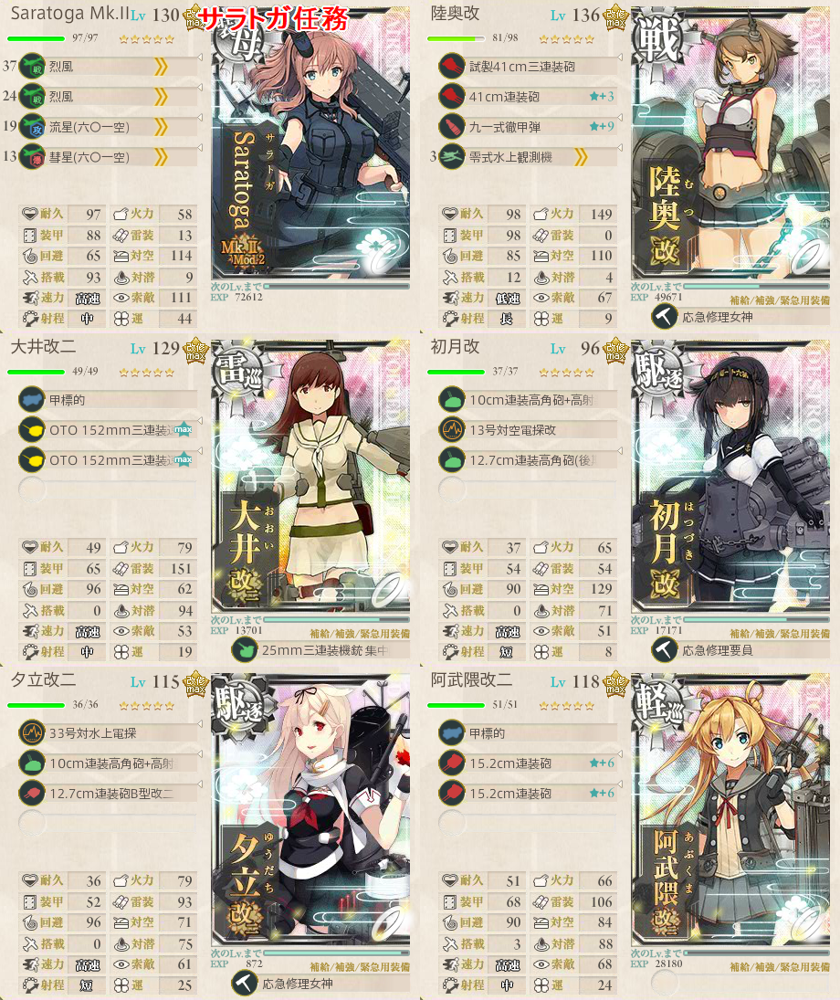

【艦これ】6-2 MS諸島沖
6-2 MS諸島沖 攻略メモ
酒匂掘りも兼ねて
編成
駆逐2 戦艦1 正規空母1 航巡or重巡2（BFIK）
駆逐2 戦艦1 正規空母1 雷巡1 航巡or重巡1（BFIK 2-5式60程度？）
駆逐2 戦艦1 正規空母1 雷巡2（BFHK 2-5式43未満30以上？）
鈴谷航改二 戦艦1 駆逐2 雷巡 Zara due
熊野改二 鈴谷航改二 三隈 最上 戦艦 雷巡
装備
Hを通るルートでは、索敵値を上げすぎてはいけないため彩雲を積めないことがある
鈴谷任務構成の場合は対空及び索敵がかなりシビアな調整になってくる
鈴谷任務での装備
| 艦 | 装備 |
|---|---|
| 鈴谷航改二 | 艦攻1 烈風2 彩雲1 |
| 戦艦 | 主砲2 夜偵1 徹甲弾 |
| Zara due | 強風（1スロット目） 二式水戦 主砲2 |
| 雷巡 | お好みで |
| 防空駆逐艦 | 対空カットイン |
| 駆逐艦 | 主砲2 対空電探 |
上記構成で制空163～171で優勢ラインを確保
彩雲を積みながら索敵は38.56に抑えられている
Zara dueに強風と水戦を積んでいるところが重要
- 昼戦連撃は捨てることになるが、これで制空値が安全圏に達する
第七戦隊任務
ルート固定の関係上、第七戦隊の４隻の他は駆逐2で決定される
鈴谷か熊野いずれかを軽空母にしておくと制空権の面で楽
航巡3以上で編成することになるため、夜戦火力は十分に出る
索敵の調整に注意
下記構成で2-5式（秋）40.35
Saratoga任務
- ボスS勝利が必要

出撃ログ
Saratoga任務
| 回数 | 編成 | 2-5式（秋） | ルート | 戦果 |
|---|---|---|---|---|
| 1 | Saratoga Warspite 大井 初月 夕立 阿武隈 | 35.98 | BFIK | S勝利（日向） |
第七戦隊任務
| 回数 | 編成 | 2-5式（秋） | ルート | 戦果 |
|---|---|---|---|---|
| 1 | 熊野（航巡） 鈴谷（軽空母） 三隈 最上 陸奥 大井 | 41.42 | BFE | 最上大破 |
| 2 | 熊野（航巡） 鈴谷（軽空母） 三隈 最上 照月 萩風 | 40.35 | BFIK | S勝利（扶桑） |
鈴谷任務
| 回数 | 編成 | 2-5式（秋） | ルート | 戦果 |
|---|---|---|---|---|
| 1 | 鈴谷 長門 Zara 大井 照月 萩風 | 38.56 | BFIK | S勝利（霧島） |
ゲージ破壊
| 回数 | 編成 | 2-5式（秋） | ルート | 戦果 |
|---|---|---|---|---|
| 1 | 磯風 扶桑 大井 照月 木曾 雲龍 | 30.37 | BFI | 木曾大破 |
| 2 | 夕雲 長門 大井 照月 木曾 雲龍 | 28.81 | BFHK | S勝利（鈴谷） |
| 3 | 五月雨 山城 大井 照月 北上 雲龍 | 42.21 | BFIK | S勝利（浜風） |
| 4 | 磯風 山城 大井 照月 木曾 雲龍 | 41.11 | BFI | 山城大破 |
| 5 | 磯風 山城 北上 照月 木曾 雲龍 | 40.87 | BFIK | S勝利（浦波） |
| 6 | 磯風 山城 北上 初月 木曾 加賀 | 40.21 | BFI | 磯風大破 |
| 7 | 磯風 長門 北上 初月 木曾 加賀 | 40.69 | BFI | 北上 木曾大破 |
| 8 | 五月雨 長門 北上 初月 木曾 加賀 | 42.72 | BFIK | S勝利（愛宕） |
| 9 | 五月雨 山城 北上 初月 木曾 加賀 | 42.24 | BFIK | S勝利（金剛） |
| 10 | 加賀 長門 大井 木曾 夕雲 照月 | 46 | B | 大井大破 |
| 11 | 加賀 長門 北上 木曾 磯波 照月 | 41.48 | BFIK | S勝利（山城） |
敵編成
| マス | 編成 | 備考 |
|---|---|---|
| B | 戦艦1 重巡2 軽空母1 駆逐2 | 複縦陣 |
| 軽空母2 戦艦1 軽巡ツ級1 駆逐2 | 輪形陣 優勢69 確保138 | |
| 戦艦1 軽空母1 重巡1 軽巡ツ級1 駆逐2 | 輪形陣 | |
| 軽空母1 戦艦1 重巡1 軽巡ツ級1 駆逐2 | 輪形陣 | |
| H | 戦艦2 軽巡ツ級2 駆逐2 | |
| 戦艦2 軽空母1 軽巡ツ級1 駆逐2 | ||
| I | 戦艦ル改1 戦艦ル級2 軽巡ツ級1 駆逐2 | 単縦陣 |
| 空母ヲ改1 戦艦1 軽巡ツ級1 駆逐3 | 輪形陣 優勢153 確保306 | |
| 重巡リ改1 戦艦1 軽空母1 軽巡ツ級1 駆逐2 | 複縦陣 | |
| K | 輸送1 戦艦ル改1 軽巡ツ級2 駆逐2 | 単縦陣 |
| 輸送1 ヲ級1 戦艦ル改1 軽巡ツ級1 駆逐2 | 単縦陣or輪形陣 優勢126 確保252 | |